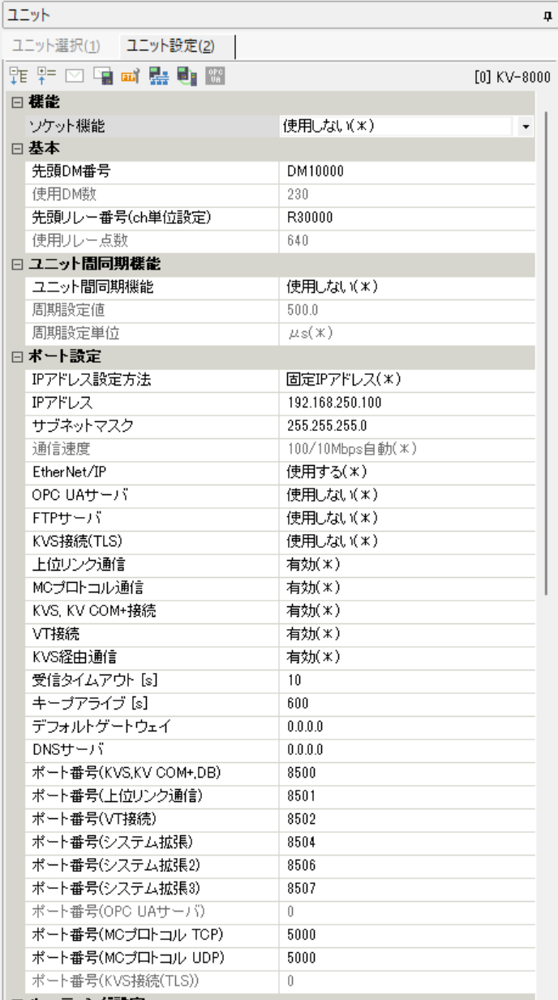

KEYENCE / KV-8000
KEYENCE KV-8000 接続設定例
KEYENCE KV-8000 を FA Labo PLC Console から Host-link（上位リンク）で接続する場合の PLC 側設定例です。
設定例の前提
IPアドレス、サブネットマスク、デフォルトゲートウェイは現場ネットワークに合わせて設定してください。以下は FA Labo PLC Console から Host-link（上位リンク）で接続する場合の設定例です。
説明の都合上、IP: 192.168.250.100、Port: 8501（デフォルト値）に統一しております。この設定に必ずしもする必要はありません。
PLCパラメータ設定後は一度PLCの電源をOFF/ONしてください。
PLC 側設定画面

ユニット設定
IPアドレス
192.168.250.100（例）サブネットマスク
要設定
上位リンク通信
有効
ポート番号（上位リンク通信）
8501（デフォルト）アプリ側で選ぶ項目
通信設定
PLC 種別
KEYENCE実機
PLC IP
192.168.250.100（例）ポート
8501機種
KEYENCE KV-8000通信
TCP / UDP
KEYENCEデバイス表記
Normal / XYM